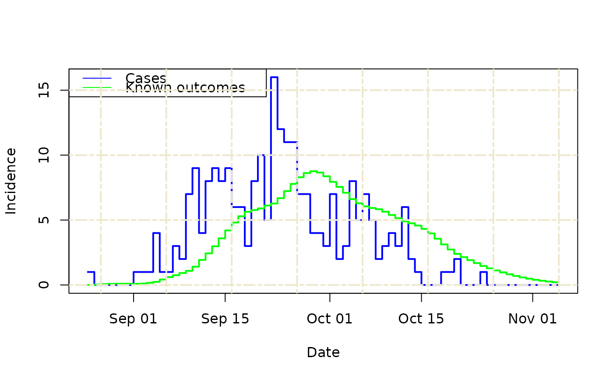

Plot the estimated known outcomes, as well as the raw data
Source:R/plot_known_outcomes.R
plot_known_outcomes.RdProduces a simple plot, using base R, of the raw case and death time-series data, as well as the estimated number of known outcomes on each day.
Arguments
- df_in
A data.frame of the format returned by
known_outcomes().
Examples
# Load Ebola 1976 outbreak data
data("ebola1976")
onset_to_death_ebola <- epiparameter::epidist_db(
disease = "Ebola Virus Disease",
epi_dist = "onset_to_death",
author = "Barry_etal"
)
#> Using Barry et al. (2018) <10.1016/S0140-6736(18)31387-4> PMID: 30047375.
#> To retrieve the short citation use the 'get_citation' function
df_known_outcomes <- known_outcomes(
df_in = ebola1976,
epi_dist = onset_to_death_ebola
)
plot_known_outcomes(df_known_outcomes)
